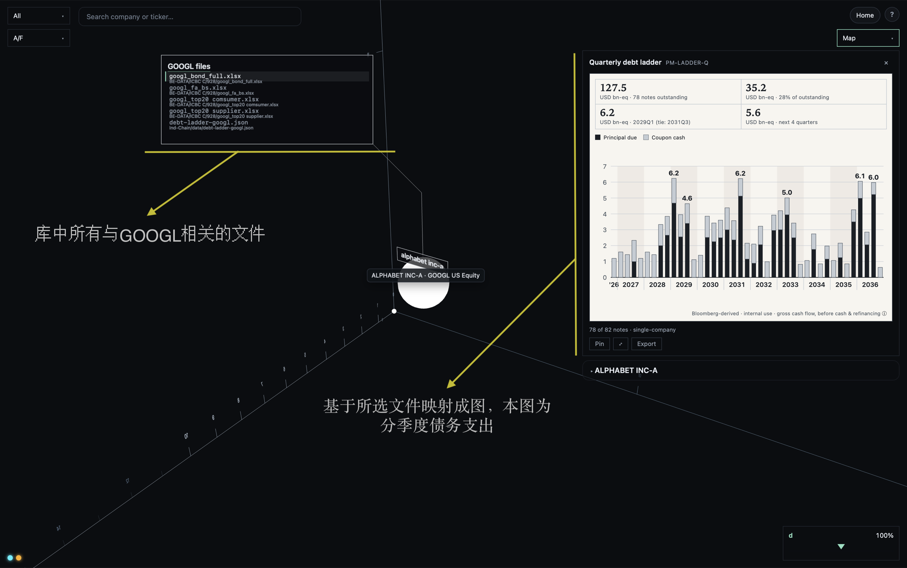
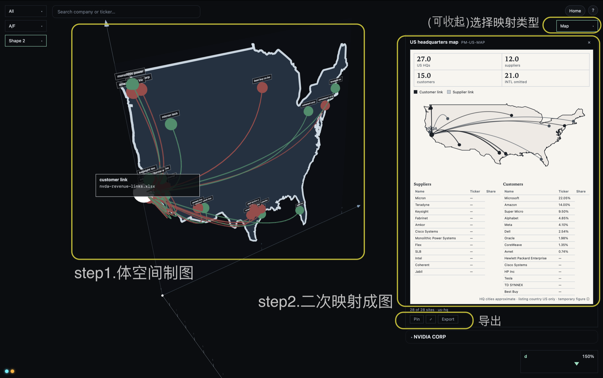
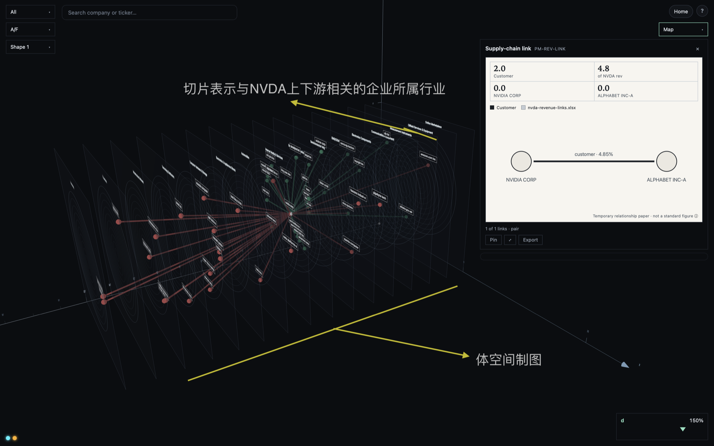
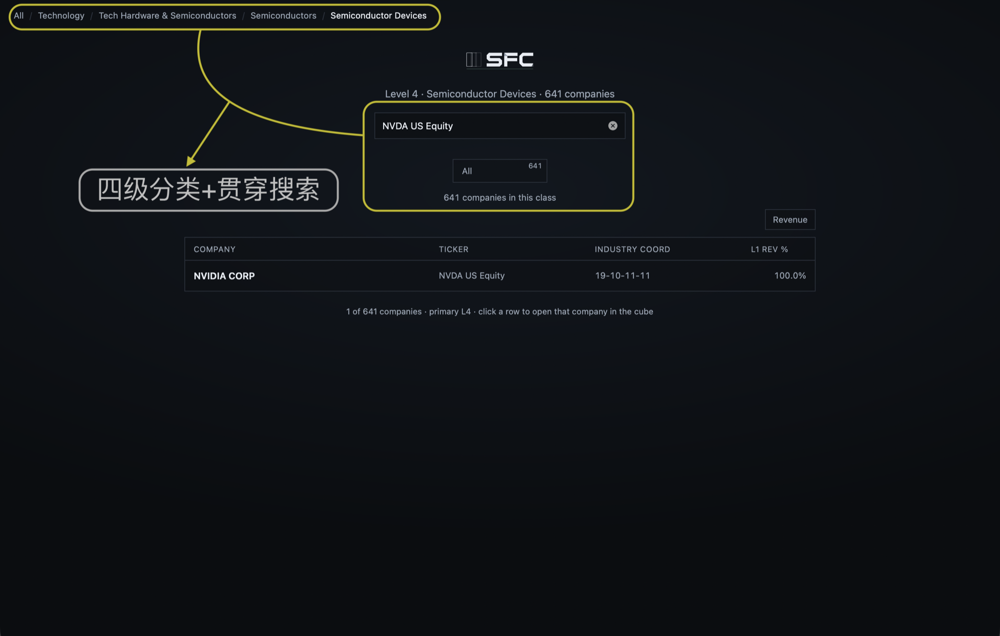
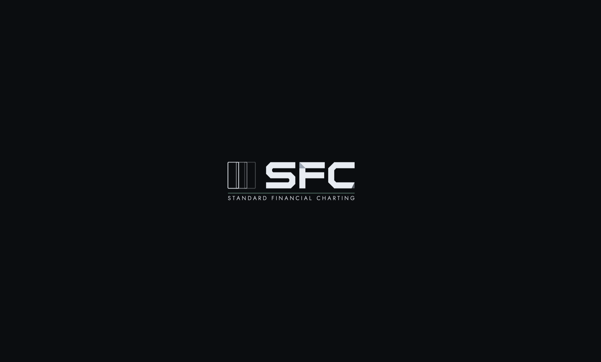
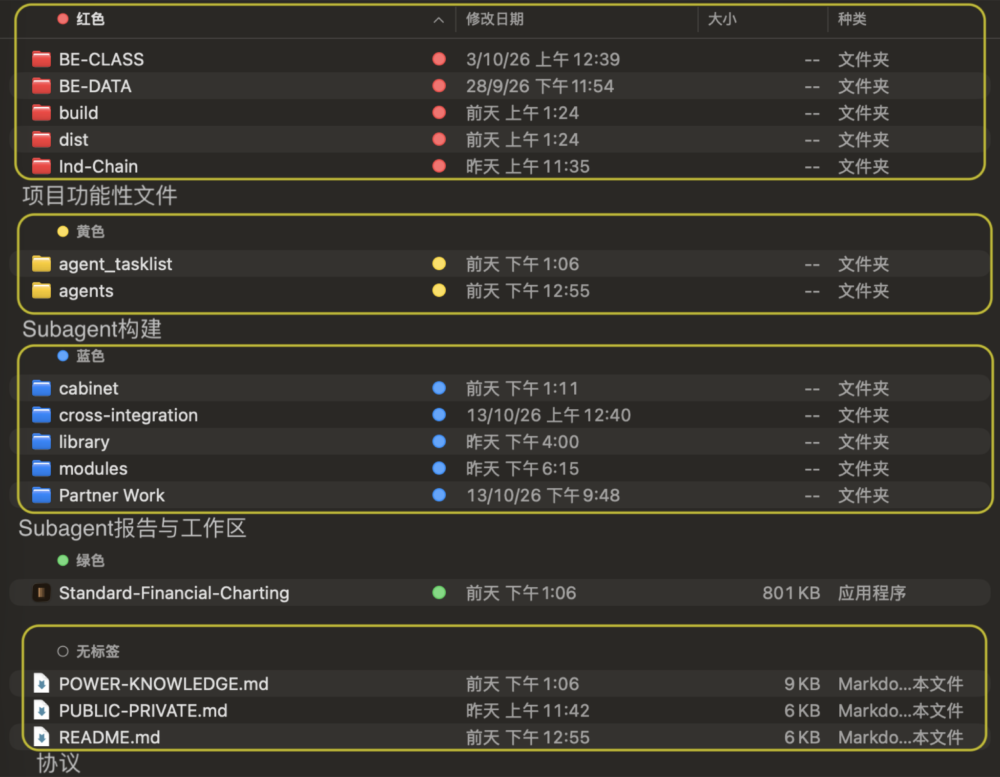

屏幕预览 · A4 纵向。打印：浏览器打开本页 → 打印 → 目的地「另存为 PDF」→ 边距「默认」→ 勾选「背景图形」→ 关闭「页眉和页脚」→ 保存。
Standard Financial Charting
标准金融制图
First Test
AI Industry Financial Risk
队长：隋宇博
CUHK · 1155262183@link.cuhk.edu.hk
队员：周晖
CUHK · 1155265519@link.cuhk.edu.hk
队员：徐国安
CUHK · 1155264619@link.cuhk.edu.hk
Project Overview
SFC(Standard Financial Charting)是一款面向金融工作者的标准化制图工作台。
在第一份测试版中，我们团队尝试从特定问题出发，探索制图工作台的可行性，同时挖掘其可能蕴藏的价值。这一特定问题就是如何可视化人工智能产业链中的风险。
可喜的是，通过不断地实践、试错，我们发现这一项目有着充分的可行性与巨大的潜力。
就远景目标来看，SFC 提供的是开放创新服务。对于客户经理，SFC 可以提供可视化贷款管理，也可以服务内部回报；对于投研人员，SFC 将提供轻便但专业的制图服务。配合团队的不断改进与开放的社区生态，SFC 也将致力于解决各种疑难制图问题，例如关系图、时序图等等。（关于其中一种改进方法——自迭代的介绍，见 5.3 节）
自 9 月 16 日收到比赛邀请，20 日召集团队，24 日敲定方向以来，开发过程仅仅不到一个月，然而，一个月内我们却取得了显著进展。这当然要部分归功于人工智能工具的辅助，但是通过头脑风暴不断迸发灵感，对人工智能工具不断开发，我想这才是至关重要的。
| 状态 | 内容 |
|---|---|
| 已完成 |
|
| 正在进行 |
|
| 未来规划 |
|



Background & Opportunity
从信息到决策，是金融永恒的课题。
当信息过多，而我们只想快速了解其中一二条主要性质时，制图的需要就产生了。通过图表来透视信息固然高效，然而，制图的过程本身却远未达到高效，事实上，制图过程更像是一场个人的精彩演绎。
一位逻辑严密的分析时，可能会用代码实现公式，进而实现制图：一位技艺精湛的职员，可能会堆叠、缩放图表，来使他们尽可能优美；一些人可能掌握独到的技巧；一些人可能使用精巧的插件。
传统方法大致如此，优点是灵活，对场景适应性强，然而缺点也很明显，代码学习成本高，办公软件的使用也依赖经验，做出来的图往往达不到统一标准，一到精细的地方就难以交互等等。
运用 AI 制图又怎样呢？有时他们的结果真能让人眼前一亮，但 AI 就像一个老顽童，每次做事总有地方达不到人的标准，一旦重做，又有些地方喜爱自由发挥；他还喜欢藏着掖着，不告诉你制图过程，使你几乎无法调整他的作品，这部分就是人机协作的问题。
三个目标，三种交互
使金融制图达到流水线般的速度，遵循法律般的标准，同时保证适应多种环境的自由度：这就是 SFC 正在解决的问题。
前 AI 时代，同时达成 3 个目标看起来是不可能的，但在 AI 时代，一条朦胧的前途就慢慢展现出来了。说朦胧，是因为 AI 受其自身性质的限制，注定要在人的灵感与指挥下才能更好的发挥效用，而人必须要在现有的成果上不断摸索，才能产生灵感。
我们为 SFC 制定了三条基础交互，如果三条基础交互能够实现，就可以说项目取得了里程碑式的进展。这三条交互分别是：
可见，通过实现各个交互，再通过三种交互的配合，金融制图的质量与效率都将得到巨大提升。
而 SFC 将不止于此，它将通过实习生策略（见 5.3 节）构建个性化词典，个性化数据库，从而成为既能服务集体，又能服务个人；既能服务制图，又能服务 AI 环境数据存储读写的集成化工作台。
Product Design
本章回答产品是什么、怎么运转。先讲两个数据库与两次映射的制图流程，再讲三类坐标，接着说明词典、函数与 LLM 的分工，最后介绍贯穿各级的分类展板与搜索。
SFC 的制图建立在两个数据库与两次映射之上：
两个数据库，两次映射制图
产品制图分为两条流程：更新数据库与制图。制图沿用图 1-1 至图 1-3 所示的两步映射——先一次映射到体空间制图台，再二次映射成图（图 3-1）。
没有坐标，可操作性就无法实现；没有坐标，自然语言下的标准化更无法实现。数据库应有数据库的坐标，数据应有数据的坐标，体空间应有空间坐标，映射应有映射坐标。我们团队的判断是，一个数据、一个空间，只要坐标形式独特，就可以有多类坐标，因为算力水平足以支持函数或大模型在多类坐标间游走调用，却无法支持应对混乱的坐标形式。
| 类 | 名称 | 作用 |
|---|---|---|
| 1 类 | 位置坐标 (s, x, y) | 制图台里唯一的摆放语言。s 为切片轴（前后），x 为左右，y 为上下；每个面上 x、y 取 0 到 10。 |
| 2 类 | 相对坐标（环上位置） | 公司点在切片面内的位置，由某个量在本切片内的相对大小决定。 |
| 3 类 | 行业坐标 | 公司在彭博 BICS 里的行业归属，七段、每段两位数字，如 12-11-11-11-00-00-00；展板与名单只显示前四段。不参与摆放。 |
制图拆给三个部件：词典统一名称，函数负责成图，LLM 在坐标间调用二者。
产品的导航由两件东西贯穿：分类展板与搜索。

Technical Architecture
本章说明系统如何搭成：数据与函数均在本机运行，尚未构建云端数据库；应用分前后端，前后端之间尚且只有一个接口；模块化后，模块与代码属一一对应关系；交付状态为本地应用。
前端是浏览器页面，分展板、名单、制图台三页。页面只通过一个接口模块用 HTTP 取 JSON，不直接读任何数据文件。
后端是运行在本机的 Python 服务，只绑定本机回环地址，只用 Python 标准库，不依赖任何第三方 Python 包；数据库与数据文档的读取权只在它手里。
本机原生外壳用 Swift 写成，一个 macOS 窗口加一个 WebKit 视图，把前后端包成一个应用：打开时拉起内嵌后端，关窗时一并退出。
数据层。本机数据均为文件，分四类：彭博 BICS 分类库与公司成员库组成的公共数据库、演示库、关系文档与聚合文档。个人数据库尚在规划。
制图流。制图台打开时向后端取一份数据包；位置坐标经一次映射进入体空间，体空间里的选择再经二次映射成为平面图。二次映射是纯函数，同一输入必得同一张图。词典与 LLM 尚在规划。整条数据流如图 4-2。
模块与代码一一对应：每个后端模块对应一个 Python 文件，每个前端模块对应一个脚本文件。2026 年 10 月完成拆分时，后端入口文件由 1,352 行降到 352 行，分类树、公司树、单公司视图、关系集各自成文件。模块化后，程序之间的调用将会更加清晰，基于模块的更改将更加便捷，并能隔离风险，为后面的交互化改革和自迭代奠定基础。
| 分区 | 个数 | 模块 |
|---|---|---|
| 前端 · 决策路径 | 4 | FE-NAV 导航 FE-BOARD 展板 FE-LIST 列表 FE-LISTAREA 列表属地 |
| 前端 · 体空间 | 7 | FE-OPENCUBE 跳转制图台 FE-ACTION 操作 FE-COORDONE 摆放坐标 FE-SCENE 场景 FE-PANEL 面板 FE-FOCUS 聚焦 FE-AESTHETIC 前端设计 |
| 前端 · 平面映射 | 5 | FE-MAPPROJ 映射投影 FE-MAPDRAW 映射绘制 FE-MAPREG 映射注册 FE-MAPDOCK 映射台 FE-MAPOUT 映射导出 |
| 前端 · 接口枢纽 | 1 | FE-API 接口 |
| 后端 | 11 | BE-HTTP HTTP 服务 BE-BUNDLE 捆绑编排 BE-DB-DEMO 演示集 BE-DB-SHADOW 影集 BE-NVDA-LAYOUT N布局规划 BE-NVDA-LINKS N关系集 BE-DEBT 偿债窄口 BE-BICS-HIER BICS分类树 BE-BICS-ENTITY BICS公司树 BE-BICS-AREA BICS地区映射 BE-BICS-INGEST BICS导入 |
| 壳层（本地应用） | 3 | SHELL-WINDOW 壳窗口 SHELL-PROC 内嵌后端 SHELL-PACK 打包 |
| 静态模块跟踪 | 1 | MODULES-TRACK 静态模块跟踪 |
应用从网页改造而来，模块结构不变，只加了外壳与打包：

| 组件 | 版本 | 许可 | 用途 |
|---|---|---|---|
| three.js | 0.170.0 | MIT | 三维渲染，本地副本，无外链 |
| Python | 3.14.8（python.org universal2，PSF 签名） | PSF License | 内嵌运行时 |
| OpenSSL 3 | 随 Python 框架 | Apache-2.0 | Python 内部 |
| zstd | 随 Python 框架 | BSD-3-Clause | Python 内部 |
| ncurses | 随 Python 框架 | X11/MIT 风格 | Python 内部 |
| Jost Light 300（大写子集） | v3.7 | SIL OFL 1.1 | 全称字标 |
| SQLite | 系统自带，不随包 | 公共领域 | 数据库 |
How We Built It
团队的每一步开发都由特定子代理记录为 worklog，每一份 worklog 都设定为 1 万字，目前共有 9 份 worklog。以此为基础，我们项目的里程碑事件时间线如下：
Agent 的使用必须遵循一定的方法，我们团队在运用 Agent 的过程中总结了一系列经验。
首先是对工作流的构建，只有在行之有效的、各司其职的组织架构下，Agent 的能力才能充分发挥，如图 5-2：
除了 Subagent，我们还制定了一些协议与条款：

在开发中，团队难免步入未知领域。想要踏足未知，就需要构建概念，然后分析概念，运用概念。
Security & Compliance
本章就安全与合规性中的两个重点做出说明。一是使用者的数据不会轻易泄漏：今天的本地应用如此，将来加入个人数据库与个人词典之后也应如此。二是彭博数据的使用边界：不商业化，且只展示其中一部分。已经做到的与尚在规划的，分开写明。
SFC 目前是一款完全在本机运行的应用。下列各条均已实现，并由回归测试或应用自检守住：
个人数据库与个人词典上线后，使用者会把自己的数据和标签放进 SFC。对这一阶段，我们定下以下约束。各条均属规划，尚未实现：
本项目的行业分类、公司成员、供应链关系与债券数据，大部分来自彭博终端。对这些数据，我们承诺：
| 数据 | 来源 | 展示程度 | 分发范围 |
|---|---|---|---|
| 行业分类 | 彭博 BICS 2024 七级层级 | 分类展板，只显示前四段行业坐标 | 内部包与外发包 |
| 公司成员 | 彭博终端导出表（2026-10-03、10-05 两批） | 四级名单：名称、代码、行业坐标、收入占比 | 仅内部包 |
| 供应链关系 | 彭博供应链汇总（2026-10-05 截图整理） | 以英伟达为中心的关联方与占比 | 内部包与外发包 |
| 债券 | 彭博债券数据，本机预先汇总 | 每季度本金与利息合计，不展示单只债券 | 仅内部包 |
| 演示产业链 | 公开行业图谱整理，部分供应值取自彭博 | 示意营收 | 内部包与外发包 |
外发包不含公司成员库与债券聚合文件：名单为空，名称搜索无结果，偿债图不出现，其余功能照常。外发包仍含行业分类、英伟达关系文件与演示数据；是否外发由项目负责人决定，许可责任由项目负责人承担，团队不代彭博就其条款作任何背书。
SFC 是观察与沟通的工具，不是决策系统；它不替代行内模型与评级，也不预测违约。